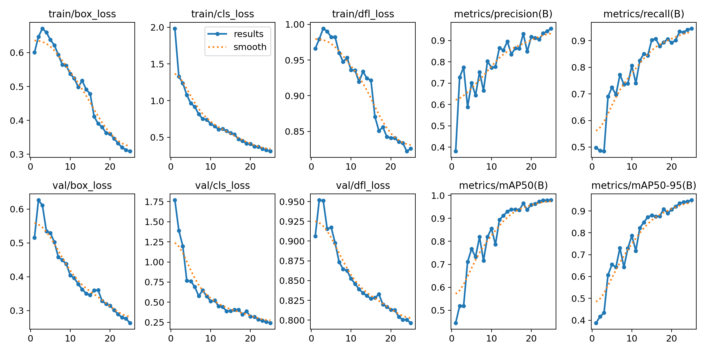
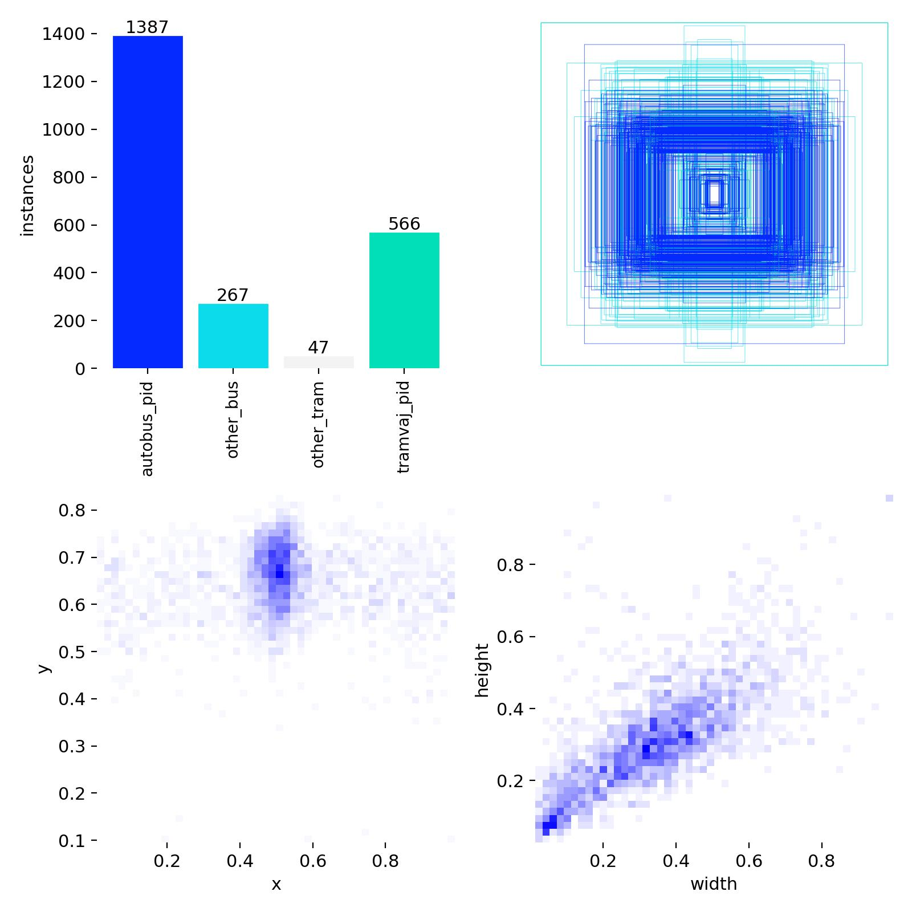

Dokumentace projektu: YOLO Detection Studio
Základní informace
Autor: Štěpán Végh
Třída: C4b
E-mail: vegh@spsejecna.cz
Datum vypracování: 20. března 2026
Škola: SPŠE Ječná, Praha 2
Jedná se o školní projekt v rámci předmětu Programové vybavení.
1. Specifikace požadavků
Funkční požadavky (Functional Requirements)
- Detekce objektů v obraze: Uživatel může nahrát obrázek a nechat v něm detekovat objekty (autobusy, tramvaje) pomocí YOLO modelu.
- Zpracování videa: Aplikace umožňuje sekvenční detekci v jednotlivých snímcích videa a uložení výsledného videa s anotacemi.
- Volba modelu: Možnost vybrat si libovolný natrénovaný model ve formátu
.pt.
- Nastavení parametrů: Uživatel může v reálném čase měnit Confidence threshold a IOU threshold.
- Export dat: Automatické generování JSON metadat s podrobnými informacemi o každé detekci.
- Webový crawler: Součástí je skript pro automatické stahování obrázků pro trénování z dopravních galerií.
Business Requirements
- Poskytnout intuitivní GUI pro uživatele, kteří neumí ovládat Python skripty v terminálu.
- Urychlit proces sběru a přípravy dat pro trénování modelů detekce vozidel PID.
2. Architektura aplikace
Aplikace je postavena na architektuře oddělující uživatelské rozhraní od logiky zpracování dat (Inference).
Komponenty a jejich vazby (Big Image)
[ GUI (Tkinter) ] <--> [ Progress Queue ] <--> [ Background Worker (Threading) ]
|
v
[ YoloInferenceService (Backend) ]
|
+-----------+-----------+
| |
[ Ultralytics YOLO ] [ OpenCV / Pillow ]
Popis částí:
- GUI (lib/app.py): Hlavní třída
YoloDetectionApp spravuje okno, widgety a uživatelské vstupy. Využívá threading pro běh inference na pozadí, aby UI nezamrzalo.
- Service Layer (lib/inference_service.py): Třída
YoloInferenceService zapouzdřuje knihovnu Ultralytics a poskytuje metody pro predikci nad obrazy a videem.
- Data Models: Použití
dataclasses (Detection, ImagePredictionResult) pro strukturované předávání výsledků.
- Helper Scripts:
src/image_resizer.py a src/create_training_config.py slouží k přípravě trénovacích sad.
3. Popis běhu aplikace (Behavior)
Typický scénář: Detekce v obrázku
- Uživatel spustí aplikaci a vybere model (např.
trained-model.pt).
- Uživatel přepne na záložku "Obrázek" a vybere soubor
vstup.jpg.
- Po kliknutí na "Detekovat" aplikace:
- Zvaliduje vstupy.
- Vytvoří instanci
YoloInferenceService (pokud už neexistuje).
- Spustí pracovní vlákno, které zavolá metodu
predict_image.
- GUI zobrazí "Zpracovávám..." a zablokuje tlačítka.
- Backend (YOLO) provede výpočet, uloží anotovaný obrázek do
gui_outputs/ a vygeneruje JSON.
- Po dokončení vlákno pošle výsledek do fronty (Queue), GUI jej vyzvedne, zobrazí náhledy a statistiky v Treeview.
4. Rozhraní, knihovny a závislosti
Aplikace využívá následující knihovny třetích stran:
| Knihovna |
Verze (přibl.) |
Účel |
ultralytics |
Latest |
Jádro pro YOLOv8/v11 inferenci. |
opencv-python |
4.x |
Zpracování obrazu, kreslení boxů, práce s videem. |
tkinter |
Standard |
Uživatelské rozhraní (součást Pythonu). |
selenium |
4.x |
Webový crawler pro sběr dat. |
PyYAML |
6.x |
Generování konfiguračních souborů pro trénování. |
requests |
2.x |
Stahování souborů v crawleru. |
5. Právní a licenční aspekty
- Licence projektu: GNU Affero General Public License v3.0 (AGPL-3.0). Viz soubor
LICENSE.
- Autorská práva:
- Kód aplikace: Štěpán Végh.
- Základ YOLO modelů: Ultralytics Inc. (AGPLv3).
- Testovací obrázky v dokumentaci/trénovací sadě: autorská práva náleží webům seznam-autobusu.cz a prazsketramvaje.cz (použito pro studijní účely).
6. Konfigurace a instalace
Instalace
git clone [URL projektu]
python -m venv .venv
.\.venv\Scripts\Activate.ps1
pip install -r requirements.txt
Spuštění
Příkazem: python lib/app.py (nebo z kořene přes skript/IDE).
Konfigurace
Aplikace nemá externí config soubor, veškeré nastavení probíhá v GUI:
- Cesta k výstupu: Výchozí je
gui_outputs/, lze změnit v poli "Výstupní složka".
- Thresholds: Nastavitelné posuvníky (0.0 - 1.0).
7. Chybové stavy a jejich řešení
| Chyba / Kód |
Příčina |
Řešení |
FileNotFoundError (Model) |
Chybí soubor .pt v adresáři models. |
Zkontrolujte, zda model existuje nebo jej vyberte přes "Procházet". |
ModuleNotFoundError |
Nejsou nainstalovány knihovny. |
Spusťte pip install -r requirements.txt. |
RuntimeError (Video Write) |
Chybějící kodeky v systému (FFmpeg). |
Backend zkusí fallback na .avi. Pokud selže, nainstalujte OpenH264 nebo FFmpeg. |
Crawler: TimeoutException |
Pomalý internet nebo změna struktury webu. |
Zkontrolujte připojení, zvyšte parametr delay v kódu crawleru. |
8. Testování a validace
Projekt obsahuje sadu unit testů v adresáři tests/.

Obrázek 1: Vizualizace výsledků trénování YOLO modelu (loss, mAP).

Obrázek 2: Distribuce a velikosti detekovaných tříd v trénovací sadě.
- test_image_resizer.py: Ověřuje správnou změnu velikosti obrázků.
- test_create_training_config.py: Testuje generování YAML souborů.
- test_model_inference.py: Validuje funkčnost inference (načtení modelu a detekce).
- test_photo_crawler.py: Ověřuje stahování obrázků pomocí Selenium.
Výsledky: Testy byly spouštěny lokálně i v CI prostředí. Všechny klíčové komponenty procházejí validací (Green status).
9. Seznam verzí a známé chyby
- v1.0.0 (Aktuální): První stabilní verze s GUI a crawlerem.
- Známé chyby:
- Při zavření okna během zpracování videa může zůstat proces viset v paměti (řeší se
daemon=True vlákny).
- Preview velkých videí může mírně lagovat UI při rychlém překreslování.
10. Přílohy a import/export
- Import: Aplikace přijímá standardní formáty obrazu (JPG, PNG) a videa (MP4, AVI).
- Export:
- Anotovaný obraz: Kopie originálu s vykreslenými boxy.
- JSON metadata: Obsahuje pole
detections se souřadnicemi xmin, ymin, xmax, ymax a confidence.